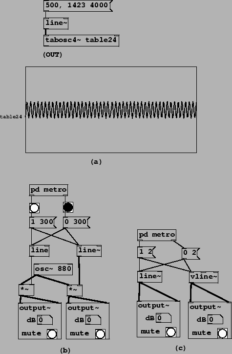

Example C01.nyquist.pd (Figure 3.13, part a) shows an oscillator playing a wavetable, sweeping through frequencies from 500 to 1423. The wavetable consists of only the 46th partial, which therefore varies from 23000 to 65458 Hertz. At a sample rate of 44100 these two frequencies theoretically sound at 21100 and 21358 Hertz, but sweeping from one to the other folds down through zero and back up.
|  |
Two other waveforms are provided to show the interesting effects of beating between partials which, although they ``should" have been far apart, find themselves neighbors through foldover. For instance, at 1423 Hertz, the second harmonic is 2846 Hertz whereas the 33rd harmonic sounds at 1423*33-44100 = 2859 Hertz--a rude dissonance.
Other less extreme examples can still produce audible foldover in less striking forms. Usually it is still objectionable and it is worth learning to hear it. Example C02.sawtooth-foldover.pd (not pictured here) demonstrates this for a sawtooth (the phasor~ object). For wavetables holding audio recordings, interpolation error can create extra foldover. The effects of this can vary widely; the sound is sometimes described as ``crunchy" or ``splattering", depending on the recording, the transposition, and the interpolation algorithm.